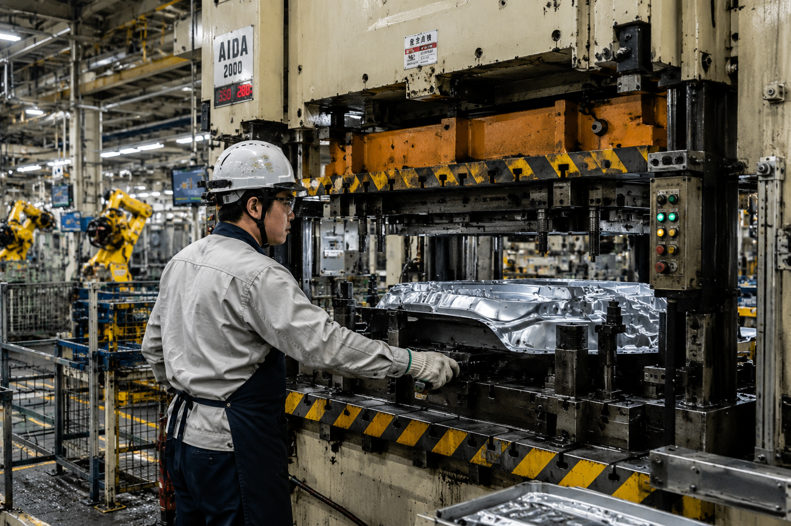

やることが決まっているシンプルな作業。すぐ慣れます！
決まった部品を取り付けるだけ！やることが決まっているのでモクモク進めることができます！

スイッチを押してプレス機を動かしたり、プレス機が加工した板金を取り出します。
完成品のチェック！シートの傾斜やドアの開閉など、さまざまなチェックをします！
早番・遅番の2交替制です
勤務時間：07:00〜15:40（実働7時間50分）
勤務時間：19:00〜翌03:40（実働7時間50分）
実際に働く先輩の声を聞いてみました
❝ ゲームが趣味で、そちらにお金を使いたいので高時給の職場を探していました。作業もシートの取付や部品の組付けなど繰り返しのルーティーン作業なので何も難しいことはないです。夜勤手当もあるので、貯金しながら新作のハードを狙っています（笑）
❝ 高時給に惹かれ入社を決めました。工場見学ができるので、職場の雰囲気を知れ「これからここで仕事をするんだ」と働くイメージができたのも良かったです。高時給の分キツイ仕事なのかと少し不安でしたがそんな事はなく、入社後はマンツーマンで教えてもらえ覚えてしまえば難しくない作業でした。今後は貯金を貯め車の購入も考えています！ネットでどの車を買うか毎日探すのが楽しみです。
働きやすさを支える充実の福利厚生
応募前の疑問はここで解決！
| 職種 | 組み立て・組付け（自動車工場） |
|---|---|
| 給与 |
月給 366,095円〜 月収例：月収36.6万円以上可能 内訳：時給1,700円×156.6H＋残業代35H＋深夜手当60H＝366,095円 昇給制度有り（入社2年目以降は時給1,800円） |
| 雇用形態 | 派遣社員（正社員登用制度あり） |
| 勤務地 | 岩手県金ケ崎町（本社管轄） |
| 勤務時間 |
2交替勤務 【早番】07:00〜15:40（実働7時間50分） 【遅番】19:00〜翌03:40（実働7時間50分） |
| 休日・休暇 | 土日休み（工場カレンダーによる） |
| 応募資格 |
学歴・職歴不問・未経験歓迎 ※22:00〜翌5:00は18歳以上の方 |
| 福利厚生 |
◎特典 ・寮費無料 ・長期連休手当 ⇒ 5万円×年3回（GW・夏季・冬季） ・通勤者限定 ガソリン代補助MAX3万円（3か月ごと）（※各規定あり） ◎待遇 ・速払いサービスあり（給与前払い制度） ・交通費支給（上限20,000円/月） ・正社員登用制度あり ・家具家電付き1R寮完備 ・事前職場見学可 ・社会保険制度完備 ・敷地内禁煙 ※各規定あり |
応募から入社まで目安で3週間程度。まずはお気軽にご応募ください
| 商号 | エヌエス・テック株式会社 |
|---|---|
| 本社所在地 | 〒230-0051 神奈川県横浜市鶴見区鶴見中央4-14-14 |
| 電話番号 |
045-504-6811（代表） 【受付時間】平日 8:30〜17:30 045-504-7575（FAX） |
| 設立 | 1973年11月 |
| 資本金 | 5,000万円 |
| 役員 |
代表取締役社長 清水 浩二 取締役 高橋 広也 取締役 中村 忍 監査役 福本 隆一 |
| 取引銀行 |
りそな銀行 鶴見支店 三菱UFJ銀行 鶴見駅前支店 横浜銀行 鶴見支店 |
| 加盟団体 | 一般社団法人 日本BPO協会 |
| 事業免許 |
労働者派遣事業 厚生労働大臣許可番号（派14-020028） 有料職業紹介事業 厚生労働大臣許可番号（14-ュ-300069） |